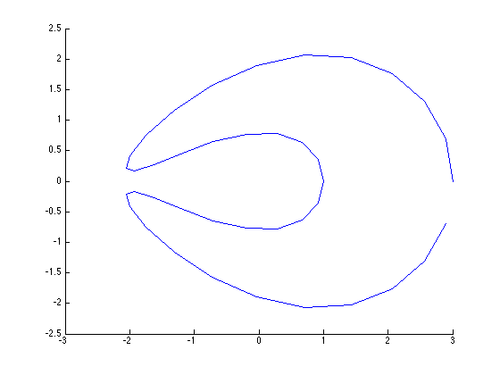

General description of the program
Numerical Algorithm for the resolution of the scattering problem governed by the following Helmholtz equation
with the boundary condition:
Complemented with the radiation condition at
Contents
- parameters of the obstacle scattering problem
- instantiation of the scatterer's shape unite Circle
- Plot the graph-options of myShape
- instantiation of the scatterer's shape Ellipse
- Plot the graph-options of myShape Ellipse
- instantiation of the scatterer's shape Kite C-shaped
- Plot the graph-options of myShape Kite C-shaped
- instantiation of the scatterer's shape Kite
- Plot the graph-options of myShape Kite
- Properties (read-only) of myShape are:
- Instantiation class "single-layer" potential integral operator
- Instantiation class "double-layer" potential integral operator
- Instantiation of the right hand side vector for the linear system
- Solve system with the iterative solver GMRES
- Authors - Copyright :
parameters of the obstacle scattering problem
myScattering_problem.TYPE =['Dirichlet ';'Neumann ';'Impedance ';'GImpedance'];% padded myScattering_problem.n = 20; % \pi/n discretization points on the boundary $\Gamma$ myScattering_problem.eta = .2; % coupling parameter myScattering_problem.k =.4; % k: wave number of the scattering problem myScattering_problem.kk = myScattering_problem.k^2; myScattering_problem.type = myScattering_problem.TYPE(1,:);
instantiation of the scatterer's shape unite Circle
myShape=Circle(1,myScattering_problem.n); % circle of radius 1 composed by 2*n discret points
Plot the graph-options of myShape
graph(myShape); % plot the shape as parametric two-dimension function
instantiation of the scatterer's shape Ellipse
myShape=Ellipse(1,.2,myScattering_problem.n); % circle of radius 1 composed by 2*n discret points
Plot the graph-options of myShape Ellipse
graph(myShape); % plot the shape as parametric two-dimension function
instantiation of the scatterer's shape Kite C-shaped
myShape=Lune(1,myScattering_problem.n); % Kite C-shaped with rotation -90°
Plot the graph-options of myShape Kite C-shaped
graph(myShape); % plot the shape as parametric two-dimension function
 instantiation of the scatterer's shape Kite
myShape=Kite(1,myScattering_problem.n); % Kite shaped with rotation -90°
Plot the graph-options of myShape Kite
graph(myShape); % plot the shape as parametric two-dimension function
Properties (read-only) of myShape are:
myShape
myShape =
Kite with properties:
radius: 1
n: 20
x: [1x40 double]
y: [1x40 double]
x_t: [1x40 double]
y_t: [1x40 double]
x_tt: [1x40 double]
y_tt: [1x40 double]
arclength: [1x40 double]
normal: [2x40 double]
tangent: [2x40 double]
distance: [40x40 double]
sinTminusTauOv2: [40x40 double]
Instantiation class "single-layer" potential integral operator
tic
disp 'Single-layer operator class construction'
SL=Single_Layer(myShape,myScattering_problem)
toc
Single-layer operator class construction
SL =
Single_Layer with properties:
K1: -0.1592
K2: 0.3731 + 0.5000i
n: 20
R: [40x40 double]
T: []
gamma: 0.5772
Elapsed time is 0.026861 seconds.
Instantiation class "double-layer" potential integral operator
tic
disp 'Double-layer operator class construction'
DL=Double_Layer(myShape,myScattering_problem)
toc
Double-layer operator class construction
DL =
Double_Layer with properties:
K1: 0
K2: -0.9048
n: 20
R: []
T: []
gamma: 0.5772
Elapsed time is 0.179803 seconds.
Instantiation of the right hand side vector for the linear system
Solve system with the iterative solver GMRES
Build up the discret linear system that corresponds ... to the combined acoustic double- and single-layer potential
tic %Phi=Solver(myScattering_problem.type); toc disp ' ** Succesfull end **'
Elapsed time is 0.000050 seconds. ** Succesfull end **
Authors - Copyright :
Mohamed Kamel RIAHI : riahi@njit.edu Joint work with Yassine BOUBENDIR and Catalin TURC
Copyright: New Jersey Institute of Technology
Last modified Nov 17 2014